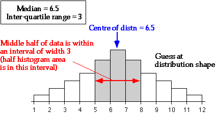

Simple summaries of centre and spread
- Centre
- The median is the simplest measure of centre. Half the
data values are more than it, and half less.
- Spread
- The range (maximum - minimum) and interquartile
range (upper quartile - lower quartile) are two different summary
statistics that describe the spread of values in a data set.
Information from median and interquartile range
Given the median and interquartile range, it is possible to sketch a bell-shaped
histogram that matches these values. Such a 'guess' is often close to the
actual distribution of values.
